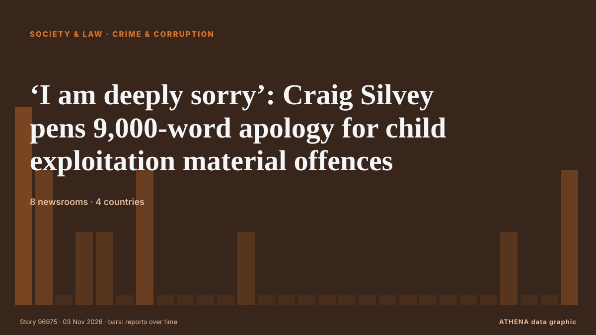

Kriminalität und Korruption
GesponsertPräsentiert von  Cybernetics and Artificial Intelligence Lab Welcome to the Cybernetics and Artificial Intelligence Laboratory, established at the Department of Business Administration of the National and Kapodistrian University of Athens. The lab is headed by Professor Dimitrios Thomakos. The lab aims to do research that can be published in top venues. Our research uses tools and methods of Artificial Intelligence, and lies in the following areas: - Forecasting - Decision making - Cyber security - Finance We are always looking forward to collaborating with exceptional students!
Cybernetics and Artificial Intelligence Lab Welcome to the Cybernetics and Artificial Intelligence Laboratory, established at the Department of Business Administration of the National and Kapodistrian University of Athens. The lab is headed by Professor Dimitrios Thomakos. The lab aims to do research that can be published in top venues. Our research uses tools and methods of Artificial Intelligence, and lies in the following areas: - Forecasting - Decision making - Cyber security - Finance We are always looking forward to collaborating with exceptional students!
| 21. Okt. | 0 |
|---|---|
| 22. Okt. | 1 |
| 23. Okt. | 0 |
| 24. Okt. | 1 |
| 25. Okt. | 0 |
| 26. Okt. | 1 |
| 27. Okt. | 0 |
| 28. Okt. | 0 |
| 29. Okt. | 1 |
| 30. Okt. | 4 |
| 31. Okt. | 2 |
| 1. Nov. | 8 |
| 2. Nov. | 5 |
| 3. Nov. | 0 |
Schlagzeilen werden auf Englisch angezeigt, wie veröffentlicht.

‘I am deeply sorry’: Craig Silvey pens 9,000-word apology for child exploitation material offences
The children’s author says he experienced trauma in childhood as he begins seven-month sentence for possessing depraved material Warning: This article contains graphic content Get our breaking news… von The Guardian
Indonesian police name suspects after 58 citizens lured to Russia to serve as mercenaries
The Indonesian citizens were initially offered jobs in logistics, border security and defence construction, but when arriving in Russia, were told to sign contracts to serve as mercenaries, undergo… von CNA (Channel NewsAsia)
Shooting at Spirit Halloween in California leaves at least one dead
Law enforcement at the site of a mass shooting where one person was killed and six others wounded, at a Spirit Halloween store in Fairfield, Calif., in the early morning hours of Saturday, Oct. von The San Juan Daily Star
2027 Politics Watch – Sunday’s Roundup: Atiku challenges Tinubu on power as Kwankwaso tells him to stand down
Atiku Abubakar challenged the APC’s defence of President Tinubu’s electricity record and proposed replacing the tariff-band system. von Premium Times
Five arrested after brutal farm robbery in which Ventersdorp farmer had ears cut off
A massive police investigation into a violent farm robbery in Ventersdorp has resulted in five arrests, with police recovering four firearms, two of which are linked to the attack on a 50-year-old… von IOL
Greek Charity Scandal: Alleged Fraud Reaches Back to 2018
Investigators say a nonprofit that solicited donations for seriously ill children raised €3.9 million, but only €1.1 million reached identified beneficiaries, as new allegations emerge about its… von to vima
Myanmar Remains on FATF Blacklist Due to Money Laundering Concerns
The Paris-based group's announcement came after a report which said that Japanese officials had lobbied for the country's removal from its list of "high-risk jurisdictions." von The Diplomat
Japan calls on U.S. military to strengthen discipline after arrest of another U.S. Marine
The latest arrest took place on Saturday, according to media reports. von CNA (Channel NewsAsia)
Police with assault rifles begin Sydney patrols in wake of Bondi attack
SYDNEY: A new police unit armed with military assault rifles has begun patrolling the streets of Sydney, in an Australian-first measure set up in response to the Bondi Beach attack last December. von Business Recorder
Halloween shootings leave at least 24 dead and 94 wounded in the US
The shootings unfolded at nightclubs, costume stores, outside stadiums and near college campuses. von The Straits Times
Chinese Communist Party taps big data surveillance to combat corruption
A Central Committee resolution said the party would also combat corruption involving virtual currencies and blockchain. von Free Malaysia Today
Police probe Jeffrey Epstein’s time spent at Balmoral with Andrew Mountbatten-Windsor
Scottish police are investigating the time convicted sex offender Jeffrey Epstein spent with Andrew Mountbatten-Windsor at Balmoral, a private royal estate in Scotland which is a favored retreat for… von Egypt Independent
Najib yet to pay RM50mil fine for house arrest, says AG
Dusuki Mokhtar confirms that the former prime minister will remain in prison until the fine is settled. von Free Malaysia Today
Police arrest 11 over attack on Sowore in Ekiti
The police had dismissed reports that Sowore was kidnapped by armed men in the state capital, describing the incident as an altercation with some individuals at a restaurant around the Dalimore area… von Vanguard
Niece and uncle shot dead at Sakumono over alleged GH¢500,000 debt
The police have launched investigations into the killing of a 57-year-old man and his 47-year-old niece at the NTHC Estate, Sakumono, in the Greater Accra Region, following a reported dispute over a… von MyJoyOnline
8-month pregnant Bengal woman delivers stillborn after assault by 'BJP workers'
In Cooch Behar district, a woman named Priya Pal lost her baby after an assault on her husband. von Times of India
New York state police to take over sexual assault complaints at Cornell University
New York state police will take over future sexual assault investigations at Cornell University, Governor Kathy Hochul said… von BusinessWorld
Man, 39, charged with murder of man in Mallow
A 39-year old man has been charged with the murder of Paul O'Connor in Mallow almost a fortnight ago. von RTÉ News
New Zealand police seize 250 kg of cocaine
As a result of successful international police cooperation and the timely exchange of operational intelligence by the Public Security Bureau of the Ministry of Interior, 68 kilograms of cocaine were… von Republika (English)